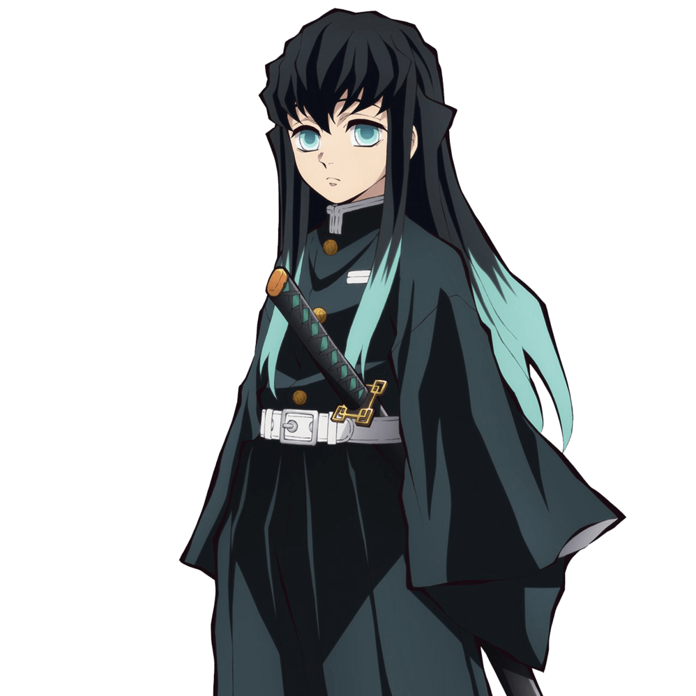

時透無一郎（ときとう むいちろう Tokitou Muichirou）
- 配音 : 河西健吾（日本）；馮嘉德（台灣）；馬正陽（中國大陸）；Griffin Burns（美國）；譚禹晉（Viu）、（TVB）（香港）
-
鬼殺隊霞柱，霞之呼吸的使用者。是握刀兩個月就當上「柱」的天才。留著黑色長髮面無表情的少年，為讓敵人無法預測他的下一步動作而故意穿著寬鬆的隊服。總是在發呆，對於無關緊要的事情很快就會忘記，但十分尊敬對自己有恩的主公，對於擾亂主公的無禮之人會予以制裁。
家族以伐木維生，10歲時母親死於肺炎，父親也在颱風天時為了替妻子採草藥而跌落山崖摔死，與他相依為命的只有雙胞胎兄長有一郎，但有一郎脾氣暴躁、嘴巴又很惡毒，兄弟倆關係十分惡劣。對於有一郎不斷阻止他成為鬼殺隊劍士相當不滿。11歲那年親眼目睹闖入家中的惡鬼重傷有一郎，之後暴怒的無一郎用木樁狠狠的將鬼釘在野外，將其用陽光燒死。當他回到家時，只見已經奄奄一息的有一郎用盡最後一口氣，道出自己的內心話，讓他頓時明白有一郎一直以來對自己的關心與愧疚，後因嚴重負傷而失去記憶，主公鼓勵的話語讓他活下去，並要他不要錯過任何找回記憶的微不足道的線索。
在柱合會議上討論炭治郎的裁決時，對於主公接納禰豆子加入鬼殺隊一事沒意見也毫無興趣。在煉刀師之村登場時性格傲慢目中無人，為搶奪能啟動機關人偶緣壹零式的鑰匙，對該人偶的持有者小鐵和前來制止他的炭治郎動粗。在聽到炭治郎那句「助人為樂，自己也會得到回報」時有了點表情。上弦之肆·半天狗和上弦之伍·玉壺襲擊煉刀師之村時，被半天狗的分身可樂吹飛，因為時透決定將煉刀技術最為高超的村長當作首要保護對象，原本打算對被玉壺的魚分身攻擊的小鐵和鐵穴森視而不見，但因為想起炭治郎的話而折回來保護兩人，然而被玉壺困在由血鬼術所製的水牢中。絕望之時看見不計前嫌拼命想要將他救出水牢的小鐵被玉壺的魚分身刺中心窩，讓他想起死去的兄長有一郎，找回原本失去的記憶同時，臉上出現了雲波狀的斑紋，擊敗玉壺。原本被認為已死的小鐵也因為衣服裡放了杏壽郎日輪刀的刀鍔，僅受到輕傷，讓先前從烏鴉那裡得知煉獄杏壽郎的死訊後沒有任何表情和情緒波動的他，想起了杏壽郎生前與自己的互動，以及父母與哥哥的魂魄出現並讚揚他的努力而激動落淚。在半天狗真身打算吃掉附近居民補充體力時，將鋼鐵塚還未磨製好的刀扔給炭治郎，讓他順利斬下半天狗的脖子。後在柱合會議上解釋滿足開紋的條件，聽從岩柱．悲鳴嶼行冥的建議，擔任起劍士們的高速移動訓練指導。
最終戰時與其他柱一同受困無限城，遭遇上弦之壹·黑死牟，在戰鬥一開始就被對方的攻擊斬斷左手並釘在柱子上，並得知黑死牟為自己的祖先繼國巖勝。在自行脫困後接受玄彌的請求，偷偷取到黑死牟掉落的頭髮和刀片讓其吃下進行半鬼化，為了讓玄彌的子彈成功擊中黑死牟，他犧牲了一隻腳進入攻擊的射程範圍內將日輪刀插入黑死牟的體內，而身體也被對方攔腰斬斷死去，但在最後一刻日輪刀變化為赫刀燒爛了黑死牟的內臟，黑死牟被擊敗後，悲鳴嶼輕輕闔上他未瞑目的雙眼。其魂魄與有一郎重逢，起初有一郎對於弟弟年紀輕輕就死去有些不諒解，問他為何做到這個地步，逃走或許還有機會活命，但無一郎認為，和炭治郎這些夥伴們的相遇改變了曾經一無所有的自己，讓他找到了真正被生下來的意義，所以此生已經沒有任何後悔與遺憾，有一郎聽完無一郎的話後釋懷了，但仍難掩悲痛的抱住他說：「對不起我明白了，但是我就是不想要無一郎死掉啊，唯獨無一郎…」，相擁的兩兄弟就這麼消失在飄散著銀杏葉的彼世中。他亦是無限城最終決戰中第二個陣亡的柱級隊員。
漫畫最終話，炭治郎的後代炭彥和一對神似有一郎和無一郎的雙胞胎擦身而過。
在鬼滅學園就讀國中二年裡芋組，與哥哥有一郎同屬將棋部。
在第一回人氣投票結果中，以55票獲得第29名。在第二回人氣投票結果中，以11948票獲得第3名。